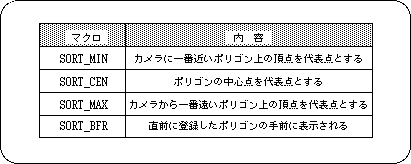
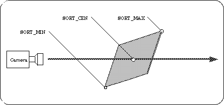
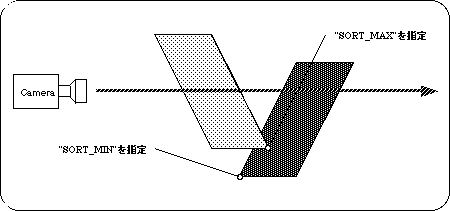
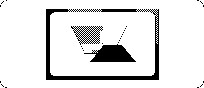

Return to previous page | Return to menu | Go to next page
The second parameter “Sort” indicates the Z sort position on the polygon. Z sort is a method that determines the position and context in the 3D space using the representative points on each polygon, and calculates and draws faster than the Z buffer method (which determines the position for each pixel on the polygon). The feature is that you can. The following are the macros that can be specified for this parameter.

And this is shown in the figure below.

“SORT_BFR” is a special specification and is used when you want to display one polygon on top of another polygon. Specifically, the display position of the polygon for which “SORT_BFR” is specified is immediately before the polygon registered immediately before that polygon. However, since it is a specification that is meaningful for the first time when you want to group two polygons and use them, you will not normally use them.
Due to the nature of the Z sort method, there is a possibility that the context will be strange depending on how the representative points are taken. Look at the following example:

When representative points are specified as shown above, the actual screen will be as shown below.
